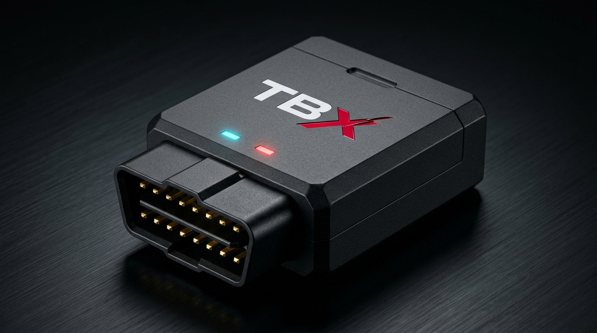
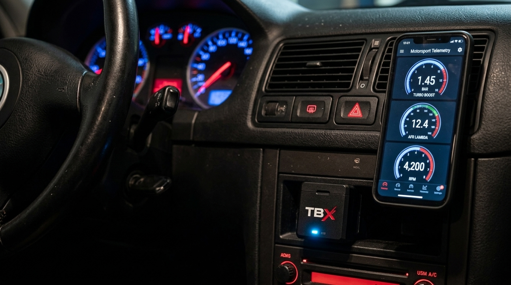
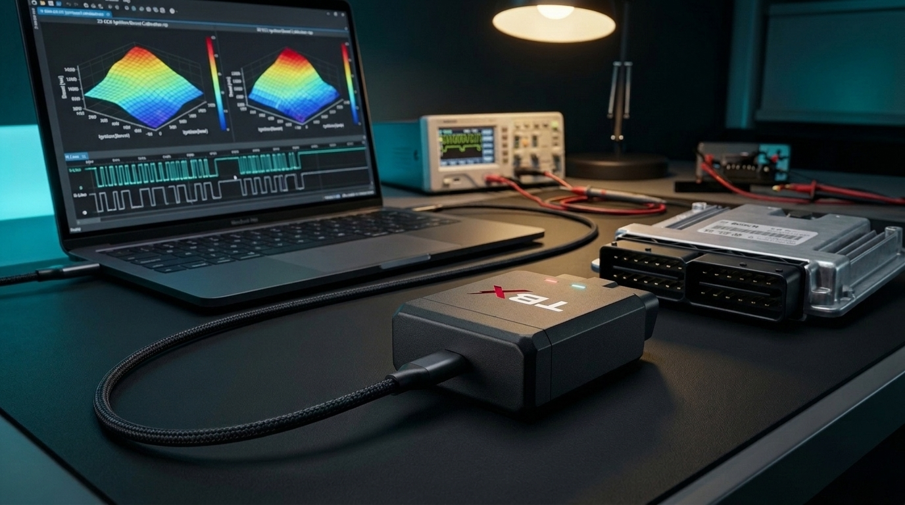
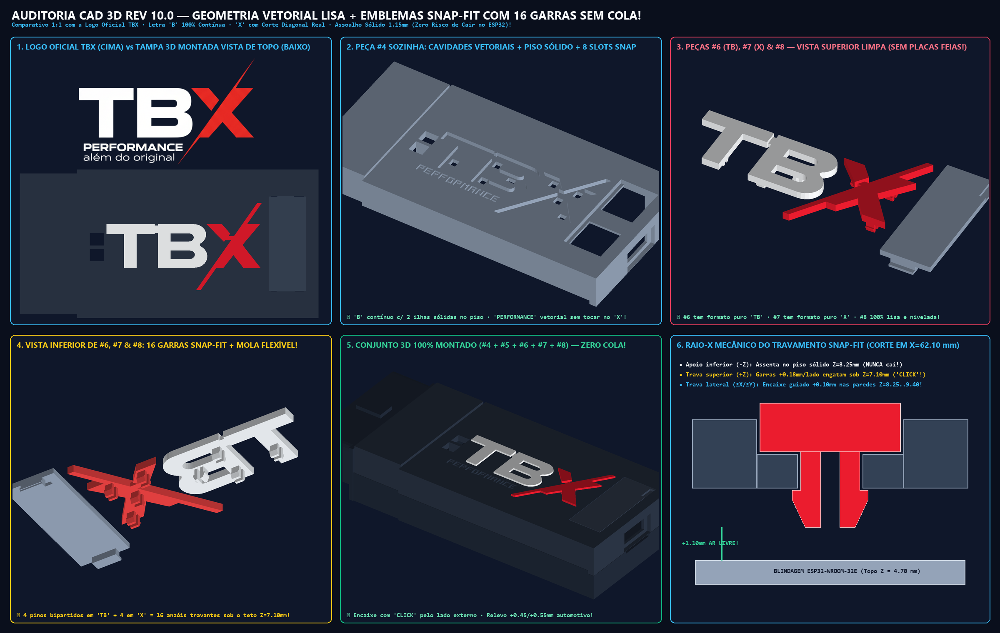

Como Conectar, Gravar Mapas na ECU e Usar Telemetria & Tempo Real a 50 Hz
Bem-vindo ao TBX Performance PRO. Seu módulo foi projetado especificamente para a linha VAG 1.8T / 2.0 (Bosch ME7.5 180cv, ME7.5.10, M3.8.3 150cv Cabo e M5.9.2), reunindo cofre interno criptografado de 16 MB, gravação segura com proteção de bateria e telemetria rápida em um único aparelho compacto.
192.168.4.1) ou Cabo USB-C Traseiro.
Conhecendo o Seu TBX Performance PRO & Tabela de Luzes (LEDs)
Entenda em 10 segundos o que o aparelho está fazendo apenas olhando para os dois LEDs superiores.
| Sinal nos LEDs Frontais | Estado Atual do Módulo | O Que Significa / Como Proceder |
|---|---|---|
| Azul Pulsando Suave | Standby / Aguardando Chave | Aparelho alimentado pela tomada OBD-II ou USB-C aguardando você virar o Pós-Chave (+15) ou conectar. |
| Azul Fixo Sólido | Conectado & Pronto (50 Hz) | ECU reconhecida com sucesso! Telemetria ao vivo ativa e pronto para leitura de log, tempo real ou comando de gravação. |
| Alternando Azul ↔ Vermelho | GRAVANDO MAPA NA ECU | NÃO DESLIGUE A CHAVE NEM DESCONECTE DA TOMADA OBD-II! Aguarde chegar a 100% e voltar para Azul Fixo. |
| Vermelho Piscando Rápido | Proteção Anti-Brick Ativada | Gravação bloqueada com segurança antes de tocar na ECU (ex.: motor girando, bateria abaixo de 12,0 V ou chave desligada). Sua ECU continua 100% intacta! |
Passo a Passo de Instalação Física & Conexão (Sem Fio ou Cabo USB-C)
Escolha o modo mais prático para o seu dia a dia (Android, iPhone ou Notebook Windows).

📱 Opção A — Bluetooth (Notebook / Android)
- Encaixe o TBX PRO na tomada OBD-II do console (no Golf MK4 / A3, fica logo acima do porta-objetos central).
- Vire a chave no 1º estágio (Pós-Chave / Painel Aceso, motor parado).
- Pareie no Bluetooth com
TBX-OBD2-PRO. - Abra o TBX ECU Studio, selecione a porta Bluetooth e clique em Conectar.

💻 Opção B — Cabo USB Type-C Traseiro
- Conecte um cabo USB-C de dados na porta traseira central do TBX PRO e no seu Notebook.
- O Windows reconhece automaticamente a porta serial de alta velocidade (
CH340C @ 115.200 bps). - Ideal para afinação fina em dinamômetro, bancada ou atualização de novos pacotes de mapas.

🍏 Opção C — Wi-Fi Direto (iPhone & Qualquer Celular)
- Com o TBX PRO espetado no carro, conecte o Wi-Fi do celular na rede
TBX-OBD2-PRO(senha padrão:tbx12345). - Abra o Safari ou Chrome e digite
http://192.168.4.1. - O Painel Digital Ao Vivo abre na hora (RPM, Boost, Sonda Lambda, Avanço, Temperatura e Bateria) sem instalar nenhum app!
Como Iniciar e Concluir a Gravação de Mapa (Flash Seguro na ECU)
Siga rigorosamente o checklist pré-voo abaixo antes de iniciar qualquer gravação de Flash.
1) Motor 100% PARADO (0 RPM) e câmbio em Ponto Morto / P | 2) Pós-Chave (+15) LIGADO (luzes do painel acesas) | 3) Faróis, Ar-Condicionado, Som e Desembaçador DESLIGADOS | 4) Tensão de bateria ≥ 12,2 V (se o carro ficou dias parado, conecte um carregador/auxiliar). Se a bateria estiver abaixo de 12,0 V, o TBX PRO bloqueia o início automaticamente para proteger sua ECU.
⚡ Caso 1 — Linha 180cv DBW (Bosch ME7.5 / ME7.5.10 Acelerador Eletrônico)
Identificação Automática
Espete o TBX PRO e ligue o Pós-Chave. Em ~2 segundos o LED fica Azul Fixo e o TBX Studio exibe o código da sua ECU (ex.: 06A906032BJ).
Iniciar Gravação Autenticada
No TBX ECU Studio, escolha o mapa desejado e clique em "Gravar Mapa na ECU". O sistema valida a assinatura criptográfica e o checksum automaticamente.
Acompanhar Progresso (0% → 100%)
Os LEDs passam a piscar alternado Vermelho ↔ Azul. O setor de Bootloader da ECU fica protegido por hardware enquanto os blocos são gravados direto da memória interna de 16 MB do Dongle (mesmo que o celular afaste, a gravação não interrompe!).
Conclusão Automática
Ao chegar em 100%, o próprio TBX PRO reinicia a ECU, volta para LED Azul Fixo e já conecta sozinho em Live-RAM 50 Hz. Desligue a chave por 5 segundos, ligue e dê partida!
🔥 Caso 2 — Linha 150cv Cabo (Bosch M3.8.3 AGU c/ Pulso +12V Pino 13)
Ativação Eletrônica do Modo Boot (+12V Vpp)
Com o TBX PRO espetado e Pós-Chave ligado, clique em "Gravar Mapa 150cv M3.8.3". O aparelho ativa eletronicamente os +12V no Pino 13 OBD-II.
Ciclar a Chave Quando Solicitado na Tela
A tela pedirá: "Desligue a chave por 2s e ligue novamente o Pós-Chave (sem dar partida)". Como o TBX PRO é alimentado pelo Pino 16 permanente, o Bluetooth/USB não desconecta durante esse giro de chave!
Gravação das Páginas de 256 KB
Assim que você religa a chave, a ECU entra em Boot (Sync 0x55) e os LEDs piscam Vermelho ↔ Azul gravando o mapa com proteção do Bootblock 0x0000..0x1FFF.
Desarme Automático do Pino 13 & Conexão
Em 100%, o TBX PRO corta imediatamente o Pino 13 para 0,00 V, reconecta por 5-Baud KWP1281 e acende o LED Azul Fixo. Pronto para dar partida! (Nota: exige fio original do Pino 13 OBD2 ao Pino 43 da ECU presente no chicote).
Pós-Gravação: Datalogger Rápido (50 Hz), Tempo Real (Live-RAM) & Multimapa
Após gravar o mapa, toda a suíte de tempo real já fica habilitada imediatamente sem trocar de cabo.
📊 1. Datalogger de Alta Velocidade (50 Hz)
- No TBX ECU Studio, abra a aba Datalogger & Osciloscópio e clique em 🔴 Gravar Log.
- O módulo captura até 50 amostras completas por segundo (RPM, Pressão de Turbo, Alvo, Sonda Lambda/AFR, Tempo de Injeção, Avanço, Retardo de Knock nos 4 cilindros, IAT, ECT e Bateria).
- Ao terminar a puxada, clique em Parar & Analisar com IA ou exporte em
.CSV.
🎛️ 2. Troca de Multimapa Instantânea (Slots 1 a 4)
- Com o motor em marcha lenta ou rodando, clique nos botões Mapa 1..4 na tela:
Slot 1: Uso Urbano Econômico / SuaveSlot 2: Stage 2 Plena PotênciaSlot 3: Motorsport + Pops & Bangs (≥ 4.000 RPM)Slot 4: Modo Manobrista (Valet Limitado)- A troca ocorre na RAM em menos de 20 milissegundos (comando
KWP 0x3D) sem engasgar o motor!
⚡ 3. Ajuste Fino em Tempo Real (Live-RAM)
- Para preparadores: abra qualquer tabela habilitada em Live-RAM (Ignicão
KFZW, CombustívelKFKHFM/LAMFA, BoostKFLDRL/LDRXN). - Altere as células desejadas e clique em Aplicar na RAM: a ECU passa a usar o novo valor na mesma hora, sem desligar o motor.
- Gostou do acerto? Clique em Consolidar na ROM para tornar definitivo!
Solução Rápida de Dúvidas & Escotilha Superior de Serviço
Seu aparelho possui sistema de auto-recuperação em 5 camadas sem precisar abrir parafusos.
| Situação Observada | Causa Provável & Solução em 10 Segundos |
|---|---|
| Bluetooth ocupado / celular trocou e não acha a porta | Abra com a unha a tampinha retangular superior atrás do logo TBX e segure o botão interno SW2 (BOOT) por 3 segundos: o LED Azul piscará 6 vezes limpando a sessão Bluetooth travada (seus mapas continuam 100% salvos!). |
| LED Vermelho piscou ao clicar em Gravar | Proteção preventiva atuou: confira se o motor está parado (0 RPM), se o Pós-Chave está ligado e se a bateria está acima de 12,0 V. Corrija e clique novamente. |
| Nenhum LED acende ao espetar no carro | Verifique o fusível do diagnóstico / alimentação +12V permanente (Pino 16 OBD-II) do veículo. Para testar o aparelho fora do carro, basta plugar qualquer cabo USB-C na traseira! |
| Na 150cv M3.8.3 aparece "Sem Sync Boot 0x55" | Gire a chave OFF → ON quando solicitado na tela. Se persistir, verifique se o chicote do veículo possui o fio ligando o Pino 13 OBD-II ao Pino 43 da ECU. |
Após concluir uma gravação completa de Flash, desligue a chave por 5 segundos, religue o Pós-Chave, aguarde 3 segundos para o corpo de borboleta eletrônico (J338 nos modelos 180cv DBW) fazer o alinhamento automático e dê a partida sem pisar no acelerador.